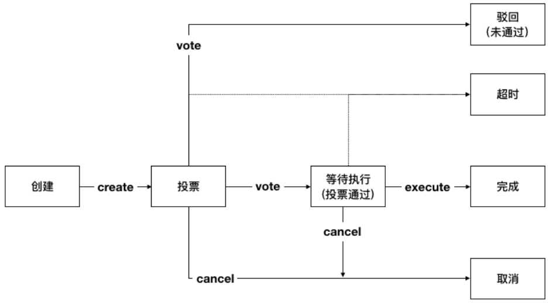

链级权限管理¶
平台基于 联盟自治CAF 框架实现链级权限管理，具体包括链级配置变更、链级角色管理、节点增删管理、合约权限管理、合约生命周期管理、合约命名服务以及账户生命周期管理。
下文将介绍CAF框架下提案-投票流程的具体使用方式及相关接口说明，其他功能的使用说明请前往相应界面：
功能概述¶
联盟自治框架CAF（Consortium Autonomous Framework）由管理员共同形成“联盟自治成员组织”，以联盟协商的形式管理联盟链。该框架适用于一切链级别的变更，如节点增删、合约管理等。
CAF的管理委员会包括 系统管理委员会 和 合约管理委员会。前者由系统管理员组成，负责链级配置变更、链级角色管理、节点增删等提案的商议与投票；后者由合约管理员组成，负责合约访问权限管理、合约生命周期管理、合约命名服务CNS等提案的商议与投票。
提案的提出、表决、通过等核心逻辑都依托于 内置智能合约（BVM） 实现，具体流程如下：
系统管理或合约管理的行为，会被申请人以提案形式提交给相应的委员会；
所有组织成员根据自身制定的投票策略对每个提案作出判断；
当组织中同意该提案的成员数量达到预设阈值时，提案被通过；
所有链上节点根据通过提案的内容自动变更节点状态。
安装及初始化¶
使用litesdk与节点交互分为以下几步：
首先需要创建 HttpProvider 对象管理与节点的连接；
然后创建 ProviderManager 对象负责集成、管理 HttpProvider；
然后再根据实际的需要创建相应的服务 Service 的具体实现类；
最后将请求发送出去拿到响应结果。
初始化的流程中litesdk的主文档中有详细介绍，此次不再赘述。此外，执行合约需要创建的是 Service 的实现类 ContractService。
使用说明¶
BVM合约接口¶
BVM合约主要通过 ContractService 提供的 invoke 接口执行，对于特殊的通过bvm合约管理合约生命周期是通过 ContractService 提供的 manageContractByVote 接口执行（主要是为了与默认的非bvm管理合约生命周期的方式区分开来）。
ContractService 的中的接口声明如下:
public interface ContractService {
Request<TxHashResponse> deploy(Transaction transaction, int... nodeIds);
Request<TxHashResponse> invoke(Transaction transaction, int... nodeIds);
Request<TxHashResponse> maintain(Transaction transaction, int... nodeIds);
Request<TxHashResponse> manageContractByVote(Transaction transaction, int... nodeIds);
}
BVM交易体¶
LiteSDK 使用 Builder 模式来负责对 Transaction 的创建，通过调用 build() 函数来获取到 Transaction 实例。针对BVM有相应的 BVMBuilder ，集成自父类 Builder ， BVMBuilder 提供了 invoke 接口用于构造参数，其接口声明如下:
class BVMBuilder extends Builder {
Builder invoke(BuiltinOperation opt)
}
BVMBuilder 提供的 invoke 方法接收一个 BuiltinOperation 类型的对象，这个对象集成自统一的父类 Operation ， 在 Operation 中封装了这个操作要调用的合约方法以及需要的参数；其定义如下:
public abstract class Operation {
public void setArgs(String... args) ;
public void setMethod(ContractMethod method) ;
public String[] getArgs() ;
public ContractMethod getMethod() ;
}
BuiltinOpetation 继承自 Operation，增加了要调用的合约地址的封装，其定义如下:
public abstract class BuiltinOperation extends Operation {
public String getAddress() ;
public void setAddress(String address) ;
}
由于bvm中有多种合约，一个合约中也有多个合约方法，为此提供了相应的 Builder 来构造相应的操作，封装了一个父类的 BuilderOperationBuilder 用于构造内置操作 BuiltinOperation，其定义如下:
public abstract class BuiltinOperationBuilder {
/**
* return build BuiltinOperation.
*
* @return {@link BuiltinOperation}
*/
public BuiltinOperation build() ;
}
针对不同的合约地址中不同的合约方法调用有封装相应的实现类，目前bvm提供的合约有： HashContract、 ProposalContract 两种，分别有 BuiltinOperation 的实现类 HashOperation 和 ProposalOperation，相应的也提供了 HashBuilder 和 ProposalBuilder 用于创建相应的操作。
HashContract¶
HashContract 中提供的合约方法如下：
Set : Set方法接收两个参数，一个参数为key，一个参数为value，用于存储键值对。
Get : Get方法接收一个参数key，用于取出HashContract中与之对应的value值。
构造 HashContract`操作的构造器 `HashBuilder`提供了 `set 和 get 方法，分别用于构造 HashContract 合约中的 Set 和 Get 方法，其定义如下:
public static class HashBuilder extends BuiltinOperationBuilder {
/**
* create set HashOperation to set hash.
*
* @param key the key value to set hash
* @param value the value mapping with key to set hash
* @return {@link HashBuilder}
*/
public HashBuilder set(String key, String value);
/**
* create get HashOperation to get hash.
*
* @param key the key to get hash
* @return {@link HashBuilder}
*/
public HashBuilder get(String key);
}
ProposalContract¶
ProposalContract 中提供的合约方法如下：
Create : Create方法接收两个参数，一个是提案内容，一个是提案类型，用于创建提案
Vote : Vote方法接收两个参数，一个是投票的提案id，一个是投赞同票还是反对票，用于对提案进行投票
Cancel : Cancel方法接收一个参数，要取消的提案id，用于取消提案
Execute : Execute方法接收一个参数，要执行的提案id，用于执行提案
注意：
提案总共有六个状态：等待投票、驳回、等待执行、已完成、取消和超时。
只有创建者有权取消提案
提案创建后通过投票可进入等待执行、驳回状态
处于等待执行的提案可有发起者发起执行操作，执行完成进入已完成状态
提案处于等待投票、等待执行状态时无法创建新的提案
目前提案的默认阈值为链级管理员的总个数，即提案创建后，每个管理员都铜牌同意此提案则通过投票
目前提案的默认超时时间为5分钟（当设置当超时时间小于5分钟时，会设置为5分钟），即创建提案的交易打包时间+5分钟则为提案超时时间
每次执行提案交易都会拿到当前系统中最新的提案，将当前执行的交易的打包时间与提案的超时时间进行对比，如果大于超时时间，则将提案状态置为超时。（不能单纯的认为提案创建后，过了超时时长就一定超时了，没过超时时长就一定没超时。交易的打包时间是主节点中打包交易时取的当前系统时间，主节点的系统时间可能不是正常的时间序列，例如：如果提案创建后发生了viewchange，viewchange之前的主节点在当前时刻的系统时间为1:00，viewchange之后的主节点中当前时刻的系统时间为1:30，这时即使提案创建之后没有超过超时时长，对提案进行投票，由于新的主节点的时间为1:30，打包的时间戳也为1:30对应的时间戳，在执行提案对比是否超时时，判断的结果就为超时。目前主节点时间变更除了viewchange之外，还有主节点主动作恶、或根据需要主动变更系统时间。）
根据提案的状态以及对提案的操作，可得出一个提案的状态迁移如下图所示：

对于提案可根据提案内容划分为以下几类：
配置类， ptype为 config ，data则为配置项操作列表；
权限类，ptype为`permission` ，data为权限操作列表；
节点类，ptype为`node` ，data为节点操作列表；
合约命名类，ptype为`cns` ，data为合约命名操作列表；
合约生命周期管理类，ptype为`contract` ，data为合约生命周期管理操作列表。
构造 ProposalContract 操作的构造器 ProposalBuilder 提供了 createForNode 、 createForCNS 、 createForPermission 、 createForContract 、 createForConfig 、 vote 、 cancel 和 execute 方法分别用于创建节点类提案、创建合约命名类提案、创建权限类提案、创建配置类提案、提案投票、取消提案和执行提案的提案操作，其定义如下:
public static class ProposalBuilder extends BuiltinOperationBuilder {
/**
* create creat ProposalOperation for node to create node proposal.
*
* @param opts node operations
* @return {@link ProposalBuilder}
*/
public ProposalBuilder createForNode(NodeOperation... opts);
/**
* create creat ProposalOperation for cns to create cns proposal.
*
* @param opts cns operations
* @return {@link ProposalBuilder}
*/
public ProposalBuilder createForCNS(CNSOperation... opts);
/**
* create creat ProposalOperation for permission to create permission proposal.
*
* @param opts permission operations
* @return {@link ProposalBuilder}
*/
public ProposalBuilder createForPermission(PermissionOperation... opts);
/**
* create creat ProposalOperation for permission to create contract proposal.
*
* @param opts contract operations
* @return {@link ProposalBuilder}
*/
public ProposalBuilder createForContract(ContractOperation... opts);
/**
* create creat ProposalOperation for permission to create config proposal.
*
* @param opts config operations
* @return {@link ProposalBuilder}
*/
public ProposalBuilder createForConfig(ConfigOperation... opts);
/**
* create vote ProposalOperation to vote proposal.
*
* @param proposalID proposal id
* @param vote vote value, true means agree; false means refuse
* @return {@link ProposalBuilder}
*/
public ProposalBuilder vote(int proposalID, boolean vote);
/**
* create cancel ProposalOperation to cancel proposal.
*
* @param proposalID proposal id
* @return {@link ProposalBuilder}
*/
public ProposalBuilder cancel(int proposalID);
/**
* create execute ProposalOperation to cancel proposal.
*
* @param proposalID proposal id
* @return {@link ProposalBuilder}
*/
public ProposalBuilder execute(int proposalID);
}
配置类操作¶
配置的操作分以下几种：
SetFilterEnable，设置filter.enable的值，即是否开启交易拦截过滤器
SetFilterRules，设置filter.rules的值，即交易拦截过滤规则
SetConsensusAlgo，设置consensus.algo的值，即共识算法（目前只是修改了配置文件，还没有实现同步切换共识算法。对于整个系统而言，共识算法并没有切换过来，重启之后才会真正切换）
SetConsensusSetSize，设置consensus.set.set_size的值，即一个节点一次广播的最大交易数（目前只是修改了配置文件，还没有实现同步切换共识配置参数。对于整个系统而言，并没有切换过来，重启之后才会真正切换）
SetConsensusBatchSize，设置consensus.pool.batch_size的值，即共识打包的最大交易数（目前只是修改了配置文件，还没有实现同步切换共识配置参数。对于整个系统而言，并没有切换过来，重启之后才会真正切换）
SetConsensusPoolSize，设置consensus.pool.pool_size的值，即节点的交易池存储的最大交易数（目前只是修改了配置文件，还没有实现同步切换共识配置参数。对于整个系统而言，并没有切换过来，重启之后才会真正切换）
SetProposalTimeout，设置proposal.timeout的值，即提案超时时间（默认超时时间为5分钟，即最短超时时间，当设置当超时时间小于最短超时时间时，会设置为最短超时时间）
SetProposalThreshold，设置proposal.threshold的值，即提案的投票阈值（默认值为链级管理员总个数）
SetContractVoteEnable，设置proposal.contract.vote.enable的值，即是否开启通过投票管理合约生命周期，默认关闭
SetContractVoteThreshold，设置proposal.contract.vote.threshold的值，即合约生命周期管理提案的投票阈值（默认值为合约管理员总个数）
构造配置类操作 ConfigOperation 的构造器 ConfigBuilder 提供了 setFilterEnable 、 setFilterRules 、 setConsensusAlgo 、 setConsensusSetSize 、 setConsensusBatchSize 、 setConsensusPoolSize 、 setProposalTimeout 、 setProposalThreshold 、 setContractVoteEnable 、 setContractVoteThreshold 以及 build 方法，其定义如下:
public static class ConfigBuilder {
/**
* create ConfigBuilder to set filter.enable.
*
* @param enable the enable value
* @return {@link ConfigOperation}
*/
public ConfigBuilder setFilterEnable(boolean enable);
/**
* create ConfigBuilder to set filter.rules.
*
* @param rules namespace filter rules
* @return {@link ConfigOperation}
*/
public ConfigBuilder setFilterRules(List<NsFilterRule> rules);
/**
* create ConfigBuilder to set consensus.algo.
*
* @param algo consensus algorithm
* @return {@link ConfigOperation}
*/
public ConfigBuilder setConsensusAlgo(String algo);
/**
* create ConfigBuilder to set consensus.set.set_size.
*
* @param size the value of consensus.set.set_size
* @return {@link ConfigOperation}
*/
public ConfigBuilder setConsensusSetSize(int size);
/**
* create ConfigBuilder to set consensus.pool.batch_size.
*
* @param size the value of consensus.pool.batch_size
* @return {@link ConfigOperation}
*/
public ConfigBuilder setConsensusBatchSize(int size);
/**
* create ConfigBuilder to set consensus.pool.pool_size.
*
* @param size the value of consensus.pool.pool_size
* @return {@link ConfigOperation}
*/
public ConfigBuilder setConsensusPoolSize(int size);
/**
* create ConfigBuilder to set proposal.timeout.
*
* @param timeout the value of proposal.timeout
* @return {@link ConfigOperation}
*/
public ConfigBuilder setProposalTimeout(Duration timeout);
/**
* create ConfigBuilder to set proposal.threshold.
*
* @param threshold the value of proposal.threshold
* @return {@link ConfigOperation}
*/
public ConfigBuilder setProposalThreshold(int threshold);
/**
* create ConfigBuilder to set proposal.contract.vote.enable.
*
* @param enable the value of proposal.contract.vote.enable
* @return {@link ConfigOperation}
*/
public ConfigBuilder setContractVoteEnable(boolean enable);
/**
* create ConfigBuilder to set proposal.contract.vote.threshold.
*
* @param threshold the value of proposal.contract.vote.threshold
* @return {@link ConfigOperation}
*/
public ConfigBuilder setContractVoteThreshold(int threshold);
/**
* return build ConfigOperation.
*
* @return {@link ConfigOperation}
*/
public ConfigOperation build();
}
权限类操作¶
权限的操作分以下几种：
CreateRole，创建角色。其中 admin、contractManager、nodeOfVP 为内置角色，合约初始化时默认创建。其中`admin` 为链级管理员，contractManager 为合约管理员，nodeOfVP 代表VP节点
DeleteRole，删除角色。其中`admin、contractManager、nodeOfVP` 角色不能被删除。
Grant，授予账户某角色
Revoke，回收账户的某角色
构造权限类操作 PermissionOperation 的构造器 PermissionBuilder 提供了 createRole 、 deleteRole 、 grant 、 revoke 以及 build 方法，其定义如下:
public static class PermissionBuilder {
/**
* create PermissionBuilder to create role.
*
* @param role role name
* @return {@link PermissionBuilder}
*/
public PermissionBuilder createRole(String role);
/**
* create PermissionBuilder to delete role.
*
* @param role role name
* @return {@link PermissionBuilder}
*/
public PermissionBuilder deleteRole(String role);
/**
* create PermissionBuilder to grant role to address.
*
* @param role
role name
* @param address account address
* @return {@link PermissionBuilder}
*/
public PermissionBuilder grant(String role, String address);
/**
* create PermissionBuilder to revoke role from address.
*
* @param role
role name
* @param address account address
* @return {@link PermissionBuilder}
*/
public PermissionBuilder revoke(String role, String address);
/**
* return build PermissionOperation.
*
* @return {@link PermissionOperation}
*/
public PermissionOperation build();
}
节点管理类操作¶
节点的操作分为以下几种：
AddNode，增加建立连接的节点，即将节点加到hosts中（此时没有加入共识）
AddVP，增加VP节点，即将节点加入共识
RemoveVP，删除共识VP节点，同时断开此节点在此namespace中与其他节点建立的连接，如果节点没有加入其他namespace，则将节点停掉
构造节点管理类操作 NodeOperation 的构造器 NodeBuilder 提供了 addNode 、 addVP 、 removeVP 以及 build 方法，其定义如下:
public static class NodeBuilder {
/**
* create NodeBuilder to add node with give params.
*
* @param pub
public key of new node
* @param hostname host name of new node
* @param role
node role
* @param namespace namespace
* @return {@link NodeBuilder}
*/
public NodeBuilder addNode(byte[] pub, String hostname, String role, String namespace);
/**
* create NodeBuilder to add vp.
*
* @param hostname host name of new node
* @param namespace namespace the new node will add
* @return {@link NodeBuilder}
*/
public NodeBuilder addVP(String hostname, String namespace);
/**
* create NodeBuilder to remove vp.
*
* @param hostname host name of remove node
* @param namespace namespace the node will be removed
* @return {@link NodeBuilder}
*/
public NodeBuilder removeVP(String hostname, String namespace);
/**
* return build NodeOperation.
*
* @return {@link NodeOperation}
*/
public NodeOperation build();
}
合约命名操作¶
合约命名的操作分以下几种：
SetCName，设置合约命名，即为某一合约地址设置合约命名
构造合约命名类操作 CNSOperation 的构造器 CNSBuilder 提供了 setCName 和 build 方法，其定义如下:
public static class CNSBuilder {
/**
* create CNSOperation to set contract name for contract address.
*
* @param address contract address
* @param name
contract name
* @return {@link CNSBuilder}
*/
public CNSBuilder setCName(String address, String name);
/**
* return build CNSOperation.
*
* @return {@link CNSOperation}
*/
public CNSOperation build();
}
合约生命周期管理操作¶
合约生命周期管理的操作分以下几种：
DeployContract，部署合约，即将合约部署到区块链上以供使用。返回值为部署是否成功以及相应的合约地址。
UpgradeContract，升级合约，即对已有的合约进行升级
MaintainContract，维护合约，即对已有的合约进行冻结、解冻和销毁操作
构造合约生命周期管理类操作 ContractOperation 的构造器 ContractBuilder 提供了 deploy 、 upgrade 、 upgradeByName 、 maintain 、 maintainByName 以及 build 方法，其定义如下:
public static class ContractBuilder {
/**
* create ContractOperation to deploy contract.
*
* @param source
contract source
* @param bin
contract bin
* @param vmType
vm type
* @param compileOpt contract compile option(the compile option to compile source to bin)
* @return {@link ContractBuilder}
*/
public ContractBuilder deploy(String source, String bin, VMType vmType, Map<String, String> compileOpt);
/**
* create ContractOperation to upgrade contract by contract address.
*
* @param source
contract source
* @param bin
contract bin
* @param vmType
vm type
* @param addr
contract address
* @param compileOpt contract compile option(the compile option to compile source to bin)
* @return {@link ContractBuilder}
*/
public ContractBuilder upgrade(String source, String bin, VMType vmType, String addr,
Map<String, String> compileOpt);
/**
* create ContractOperation to upgrade contract by contract name.
*
* @param source
contract source
* @param bin
contract bin
* @param vmType
vm type
* @param name
contract name
* @param compileOpt contract compile option(the compile option to compile source to bin)
* @return {@link ContractBuilder}
*/
public ContractBuilder upgradeByName(String source, String bin, VMType vmType, String name,
Map<String, String> compileOpt);
/**
* create ContractOperation to maintain contract by contract address.
*
* @param vmType vm type
* @param addr
contract address
* @param opCode operation code, 2 means freeze, 3 means unfreeze, 5 means destroy
* @return {@link ContractBuilder}
*/
public ContractBuilder maintain(VMType vmType, String addr, int opCode);
/**
* create ContractOperation to maintain contract by contract name.
*
* @param vmType vm type
* @param name
contract address
* @param opCode operation code, 2 means freeze, 3 means unfreeze, 5 means destroy
* @return {@link ContractBuilder}
*/
public ContractBuilder maintainByName(VMType vmType, String name, int opCode);
/**
* return build ContractOperation.
*
* @return {@link ContractOperation}
*/
public ContractOperation build();
}
bvm的合约操作创建好之后，使用 BVMBuilder 提供的 invoke 方法构造bvm的交易体，使用 build 方法构造出交易 transaction ，并为交易设置 txVersion 并使用 sign 方法签名，得到最终可以发送执行的交易体。
创建请求¶
这个过程分为两步，先创建 ContractService 对象，再制定之前构造的交易体调用相应的服务接口。示例如下:
ContractService contractService = ServiceManager.getContractService(providerManager);
Request<TxHashResponse> contractRequest = contractService.deploy(transaction);
发送交易体¶
这个过程实际分为两步，调用 send() 部署合约拿到响应，再对响应解析拿到 ReceiptResponse （执行结果），这是合约相关接口独有的，其他接口一般只需要调用 send() 方法拿到响应就结束了。
ReceiptResponse receiptResponse = contractRequest.send().polling();
解析回执¶
在 Decoder 类中，提供了 decodeBVM 的方法用于解析bvm交易回执，其定义如下:
/**
* decode bvm receipt result to bvm.Result.
*
* @param encode receipt result
* @return {@link Result}
*/
public static Result decodeBVM(String encode);
其中 Result 中含有三个字段， success 表示是否成功（指的是对HashContract以及ProposalContract的操作是否成功，对于ProposalContract而言，提案内容中包含的每个操作在执行时是否成功，在 ret 字段中展示，因为提案支持批量操作）， err 表示错误信息， ret 为返回的相应数据。
当需要解析 result.ret 的值时（创建提案失败，或执行提案的时候）， Decoder 类中提供了 decodeBVMResult 的方法，其定义如下:
/**
* decode ret in bvm.Result to bvm.OperationResult list.
*
* @param resultRet the list of bvm.OperationResult
* @return {@link List<OperationResult/>}
*/
public static List<OperationResult> decodeBVMResult(String resultRet);
其中 OperationResult 中含有两个字段， code 表示执行结果（200为成功）， msg 为相应的错误信息（code不为200时）或操作返回值（部署合约操作的合约地址）。列表中 OperationResult 的顺序与创建提案时，提案中包含的操作顺序一致。
使用示例¶
HashContract¶
HashContract中有两个方法可供调用，Set和Get方法。
SetSet方法接收两个参数，一个参数为key，一个参数为value，用于存储键值对。使用HashBuilder 提供的set 方法构造一个BuiltinOperation ，然后使用BVMBuilder 提供的invoke 方法设置参数，使用build 方法构造Transaction ，然后使用ContractService 提供的invoke 方法构造请求，最后将请求发出拿到响应结果，其示例如下:
String key = "0x123";
String value = "0x456";
Account ac = accountService.fromAccountJson(accountJsons[5]);
Transaction transaction = new Transaction.
BVMBuilder(ac.getAddress()).
invoke(new HashOperation.HashBuilder().set(key, value).build()).
build();
transaction.sign(ac);
ReceiptResponse receiptResponse = contractService.invoke(transaction).send().polling();
Result result = Decoder.decodeBVM(receiptResponse.getRet());
System.out.println(result);
GetGet方法接收一个参数key，用于取出HashContract中与之对应的value值。其示例如下:
String key = "0x123";
Account ac = accountService.fromAccountJson(accountJsons[5]);
Transaction transaction = new Transaction.
BVMBuilder(ac.getAddress()).
invoke(new HashOperation.HashBuilder().get(key).build()).
build();
transaction.sign(ac);
ReceiptResponse receiptResponse = contractService.invoke(transaction).send().polling();
Result result = Decoder.decodeBVM(receiptResponse.getRet());
System.out.println(result);
ProposalContract¶
ProposalContract提供创建提案、取消提案、提案投票以及执行提案的操作，分别对应Create、Cancel、Vote、Execute方法。
创建提案¶
配置类
创建配置类提案时，先使用 ConfigBuilder 构造配置类的操作，然后使用 ProposalBuilder 提供的 createForConfig 构造创建提案的操作，再使用 BVMBuilder 提供的 invoke 封装操作到交易中，使用 build 方法构造交易，然后创建请求、发送请求、解析结果，其示例如下:
ArrayList<NsFilterRule> rules = new ArrayList<>();
rules.add(new NsFilterRule());Account ac = accountService.fromAccountJson(accountJsons[5]);
Transaction transaction = new Transaction.BVMBuilder(ac.getAddress()).invoke(new ProposalOperation.ProposalBuilder().createForConfig(
new ConfigOperation.ConfigBuilder().setFilterEnable(false).build(),
new ConfigOperation.ConfigBuilder().setFilterRules(rules).build(),
new ConfigOperation.ConfigBuilder().setConsensusAlgo("rbft").build(),
new ConfigOperation.ConfigBuilder().setConsensusBatchSize(100).build(),
new ConfigOperation.ConfigBuilder().setConsensusPoolSize(200).build(),
new ConfigOperation.ConfigBuilder().setConsensusSetSize(50).build(),
new ConfigOperation.ConfigBuilder().setProposalThreshold(4).build(),
new ConfigOperation.ConfigBuilder().setProposalTimeout(Duration.ofMinutes(8).abs()).build(),
new ConfigOperation.ConfigBuilder().setContractVoteThreshold(3).build(),
new ConfigOperation.ConfigBuilder().setContractVoteEnable(true).build() ).build()).
).build()).build();
transaction.sign(ac);
ReceiptResponse receiptResponse = contractService.invoke(transaction).send().polling();
Result result = Decoder.decodeBVM(receiptResponse.getRet());
System.out.println(result);
权限类
创建权限类提案时，先使用 PermissionBuilder 构造权限类的操作，然后使用 ProposalBuilder 提供的 createForPermission 构造创建提案的操作，再使用 BVMBuilder 提供的 invoke 封装操作到交易中，使用 build 方法构造交易，然后创建请求、发送请求、解析结果，其示例如下:
Account ac = accountService.fromAccountJson(accountJsons[5]);
Transaction transaction = new Transaction.
BVMBuilder(ac.getAddress()).invoke(new ProposalOperation.ProposalBuilder().createForPermission(
new PermissionOperation.PermissionBuilder().createRole("managerA").build(),
new PermissionOperation.PermissionBuilder().grant("managerA", account.getAddress()).build(),
new PermissionOperation.PermissionBuilder().revoke("managerA", account.getAddress()).build(),
new PermissionOperation.PermissionBuilder().deleteRole("managerA").build()
).build()).build();
transaction.sign(ac);
ReceiptResponse receiptResponse = contractService.invoke(transaction).send().polling();
Result result= Decoder.decodeBVM(receiptResponse.getRet());
System.out.println(result);
节点类
创建节点类提案时，先使用 NodeBuilder 构造节点类的操作，然后使用 ProposalBuilder 提供的 createForNode 构造创建提案的操作，再使用 BVMBuilder 提供的 invoke 封装操作到交易中，使用 build 方法构造交易，然后创建请求、发送请求、解析结果，其示例如下:
Account ac = accountService.fromAccountJson(accountJsons[5]);
List<NodeOperation> nodeOpts = new ArrayList<>();
for (int i = 1; i < 5; i++) {
nodeOpts.add(new NodeOperation.NodeBuilder().addNode(("pub" + i).getBytes(), "node" + i, "vp", "global").build());
nodeOpts.add(new NodeOperation.NodeBuilder().addVP("node" + i, "global").build());
}
Transaction transaction = new Transaction.
BVMBuilder(ac.getAddress()).invoke(new ProposalOperation.ProposalBuilder().
createForNode(nodeOpts.toArray(new NodeOperation[nodeOpts.size()])).build()).build();
transaction.sign(ac);
ReceiptResponse receiptResponse = contractService.invoke(transaction).send().polling();
Result result = Decoder.decodeBVM(receiptResponse.getRet());
System.out.println(result);
合约命名类
创建合约命名类提案时，先使用 CNSBuilder 构造合约命名类的操作，然后使用 ProposalBuilder 提供的 createForCNS 构造创建提案的操作，再使用 BVMBuilder 提供的 invoke 封装操作到交易中，使用 build 方法构造交易，然后创建请求、发送请求、解析结果，其示例如下:
Account ac = accountService.fromAccountJson(accountJsons[5]);
Transaction transaction = new Transaction.BVMBuilder(ac.getAddress()).
invoke(new ProposalOperation.
ProposalBuilder().
createForCNS(new CNSOperation.
CNSBuilder().
setCName("0x0000000000000000000000000000000000ffff01", "HashContract").
build()).
build()).
build();
transaction.sign(ac);
ReceiptResponse receiptResponse = contractService.invoke(transaction).send().polling();
Result result = Decoder.decodeBVM(receiptResponse.getRet());
System.out.println(result);
合约生命周期管理类
创建合约生命周期管理类提案时，先使用 ContractBuilder 构造合约生命周期管理类的操作，然后使用 ProposalBuilder 提供的 createForContract 构造创建提案的操作，再使用 BVMBuilder 提供的 invoke 封装操作到交易中，使用 build 方法构造交易，然后创建请求、发送请求、解析结果，其示例如下:
Account ac = accountService.fromAccountJson(accountJsons[5]);
Transaction transaction = new Transaction.
BVMBuilder(ac.getAddress()).
invoke(new ProposalOperation.ProposalBuilder().createForContract(
// deploy
new ContractOperation.ContractBuilder().deploy("source", bin, VMType.EVM, null).build()
// upgrade
// new ContractOperation.ContractBuilder().upgrade("source", bin, VMType.EVM, address,
null).build(),
// freeze
// new ContractOperation.ContractBuilder().maintain(VMType.EVM, address, 2).build()
// unfreeze by name
// new ContractOperation.ContractBuilder().maintainByName(VMType.EVM, name, 3).build(),
// upgrade by name
// new ContractOperation.ContractBuilder().upgradeByName("source", bin, VMType.EVM, name,
null).build()).build()).
build();
transaction.sign(ac);
ReceiptResponse receiptResponse = contractService.invoke(transaction).send().polling();
Result result = Decoder.decodeBVM(receiptResponse.getRet());
System.out.println(result);
提案投票¶
提案创建后，具有相应权限的用户可以对提案进行投票（合约管理员可对合约生命周期管理类提案进行投票，链级管理员可对其他类型提案进行投票，目前默认genesis账户既是链级管理员又是合约管理员，后续可通过权限类提案进行变动），同意此提案内容则投赞同票，不同意为反对票，其示例如下:
Account ac = accountService.fromAccountJson(accountJsons[5]);
Transaction transaction = new Transaction.
BVMBuilder(ac.getAddress()).
invoke(new ProposalOperation.ProposalBuilder().
// 赞同票
vote(1, true).
build()).
build();
transaction.sign(ac);
ReceiptResponse receiptResponse = contractService.invoke(transaction).send().polling();
Result result = Decoder.decodeBVM(receiptResponse.getRet());
System.out.println(result);
取消提案¶
创建后的提案如果处于投票中 Voting 、等待执行 Wating_Exe 时，提案创建者可以发送交易取消提案，其示例如下:
Account ac = accountService.fromAccountJson(accountJsons[5]);
Transaction transaction = new Transaction.
BVMBuilder(ac.getAddress()).
invoke(new ProposalOperation.ProposalBuilder().
cancel(1).
build()).
build();
transaction.sign(ac);
ReceiptResponse receiptResponse = contractService.invoke(transaction).send().polling();
Result result = Decoder.decodeBVM(receiptResponse.getRet());
System.out.println(result);
执行提案¶
提案创建者可对处于等待执行 Wating_exe 的提案发起执行操作，其示例如下:
Account ac = accountService.fromAccountJson(accountJsons[5]);
Transaction transaction = new Transaction.
BVMBuilder(ac.getAddress()).
invoke(new ProposalOperation.ProposalBuilder().
execute(1).
build()).
build();
transaction.sign(ac);
ReceiptResponse receiptResponse = contractService.invoke(transaction).send().polling();
Result result = Decoder.decodeBVM(receiptResponse.getRet());
System.out.println(result);
相关接口¶
接口详情可参考链级权限服务的[API文档-链级权限服务](缺文档地址）
查询提案¶
参数：
nodeIds 请求向哪些节点发送
Request<ProposalResponse> getProposal(int... nodeIds);
拿到 ProposalResponse 后，可通过 getProposal 方法拿到提案信息 Proposal，其定义如下:
public class ProposalResponse extends Response {
public class Proposal {
private int id;// 提案id
private String code; //提案内容
private int timestamp; // 创建时间
private int timeout;// 超时时间
private String status;// 提案状态
private List<VoteInfo> assentor;//赞同列表
private List<VoteInfo> objector;// 反对列表
private int threshold; // 阈值
private int score;// 赞同权重
private String creator;// 创建者
private String version;// 版本
private String type;// 类型
private String completed;// 执行提案的交易hash
private String cancel;// 取消提案的交易hash
}
public class VoteInfo {
private String addr;// 投票者地址
private String txHash;// 投票的交易hash
}
}
查询配置¶
参数：
nodeIds 请求向哪些节点发送
Request<ConfigResponse> getConfig(int... nodeIds);
拿到 ConfigProposal 后，通过 getConfig 方法拿到配置信息，配置信息是 toml 格式的字符串。
查询连接的节点信息¶
参数：
role 节点角色（目前只支持查询vp节点）
nodeIds 请求向哪些节点发送
Request<HostsResponse> getHosts(String role, int... nodeIds);
拿到 HostsResponse 后，通过 getHosts 方法拿到节点信息。 getHosts 方法返回的是key为节点名，value为节点公钥的map。
查询参与共识的节点信息¶
参数：
nodeIds 请求向哪些节点发送
Request<VSetResponse> getVSet(int... nodeIds);
拿到 VSetResponse 后，通过 getVSet 拿到共识的节点信息。 getVSet 方法返回的是所有参与共识的节点列表。
查询所有角色信息¶
参数：
nodeIds 请求向哪些节点发送
Request<AllRolesResponse> getAllRoles(int... nodeIds);
拿到 AllRolesResponse 后，通过 getAllRoles 方法拿到所有的角色信息。 getAllRoles 方法返回的是key为角色名称，value为角色权重的map。
查询角色是否存在¶
参数：
role 要查询的角色名称
nodeIds 请求向哪些节点发送
Request<RoleExistResponse> isRoleExist(String role, int... nodeIds);
拿到 RoleExistResponse 后，通过 isRoleExist 方法拿到角色是否存在的结果。 isRoleExist 方法返回的是一个布尔值， true 表示存在， false 表示不存在。
根据合约地址查询合约命名¶
参数：
address 合约地址
nodeIds 请求向哪些节点发送
Request<NameResponse> getNameByAddress(String address, int... nodeIds);
拿到 NameResponse 后，通过 getName 方法拿到合约命名。 getName 方法返回的是一个字符串。
根据合约命名查询合约地址¶
参数：
name 合约命名
nodeIds 请求向哪些节点发送
Request<AddressResponse> getAddressByName(String name, int... nodeIds);
拿到 AddressResponse 后，通过 getAddress 方法拿到合约地址。 getAddress 方法返回的是一个字符串。
查询所有合约地址到合约名的映射¶
参数：
nodeIds 请求向哪些节点发送
Request<AllCNSResponse> getAllCNS(int... nodeIds);
拿到 AllCNSResponse 后，通过 getAllCNS 方法拿到所以的合约地址到合约命名的映射关系。 getAllCNS 方法返回的是key为合约地址，value为合约命名的map。